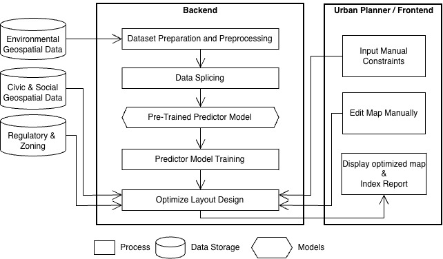

System Architecture
The Green Space Optimization System follows a modular architecture that separates data storage, backend processing, machine learning models, optimization, and user interaction. This design allows each component to perform a dedicated task while exchanging information through clearly defined interfaces. External geospatial datasets are collected and processed in the backend before being used by the prediction and optimization modules. The optimized results are then presented to the urban planner through the frontend, where additional manual adjustments can be made if necessary.

Overall System Architecture
The figure above illustrates the overall architecture of the proposed Green Space Optimization System. The system is divided into two major environments: the Backend, which performs all automated data processing, prediction, and optimization tasks, and the Urban Planner / Frontend, where users define planning constraints, review optimization results, and manually refine the generated layouts.
On the left side of the architecture are three independent geospatial repositories that provide the information required by the optimization process. Environmental Geospatial Data contains datasets describing environmental conditions such as vegetation coverage, land surface temperature, weather observations, and terrain information. Civic & Social Geospatial Data stores urban information such as building footprints, roads, population distribution, existing public facilities, and other infrastructure datasets. Regulatory & Zoning contains planning regulations including zoning classifications, protected areas, land ownership, development restrictions, and other policy constraints that determine where green infrastructure may be placed. Together, these repositories provide the comprehensive spatial information required for the optimization process.
Within the backend, the Dataset Preparation and Preprocessing module validates, cleans, aligns, and standardizes all incoming datasets into a common coordinate system and spatial resolution. Missing values are handled, incompatible formats are converted, and multiple data sources are merged into a unified dataset suitable for analysis.
The processed datasets are then forwarded to the Data Splicing module, where the study area is divided into manageable spatial patches or grid cells. This stage prepares the data for machine learning by generating consistent inputs while preserving geographical relationships between neighbouring regions.
These prepared inputs are supplied to the Pre-Trained Predictor Model, which represents the machine learning component responsible for estimating vegetation characteristics, urban heat island behaviour, and environmental suitability using knowledge learned from historical observations. The model provides an informed starting point for subsequent analysis.
During the Predictor Model Training stage, the prediction model is refined using the prepared datasets to improve its performance for the selected study area. The trained model generates predictions that are later consumed by the optimization module.
The Optimize Layout Design module represents the core decision-making component of the system. It combines prediction results with environmental, social, and regulatory information while satisfying user-defined constraints such as available land, project budget, exclusion zones, zoning regulations, and planning objectives. Constraint Satisfaction techniques together with optimization algorithms search for layouts that maximize environmental benefits while respecting all required limitations. The module produces the optimal placement of green infrastructure throughout the study area.
The Urban Planner / Frontend provides the interface through which city planners interact with the system. Before optimization begins, users specify planning requirements through the Input Manual Constraints component, where project-specific constraints such as budget limits, preferred locations, prohibited areas, and policy requirements are entered. These constraints are transmitted directly to the backend optimization module.
After the optimization process completes, the generated design is presented to the planner using the Display Optimized Map & Index Report component. The interface visualizes optimized green-space layouts together with supporting performance indicators such as predicted urban heat island reduction, sustainability metrics, and estimated environmental improvements.
The Edit Map Manually component enables planners to make additional adjustments after optimization. Manual edits can be submitted back to the optimization engine for re-evaluation, allowing human expertise and automated optimization to work together during the planning process.
Overall, the architecture separates data management, machine learning, optimization, and user interaction into independent modules. This modular design improves maintainability, scalability, and future extensibility, allowing new data sources, predictive models, optimization strategies, or planning constraints to be integrated without requiring significant changes to the overall system structure.
Major Architectural Components
Data Collection
Collects satellite imagery, weather information, building footprints, vegetation inventories, energy datasets, and land-use information from multiple external providers. These datasets form the foundation for subsequent environmental analysis.
Data Processing
Validates, cleans, normalizes, and aligns heterogeneous datasets. Spatial grids, coordinate systems, temporal information, and environmental attributes are standardized before model execution.
Modeling
Constructs spatial representations of vegetation coverage, urban heat islands, land surface temperature, and environmental characteristics. This module generates the analytical information required by the optimization engine.
Optimization
Searches for optimal green-space configurations while satisfying all planning constraints. These include available land, budget, zoning restrictions, buffer distances, utility exclusion zones, public/private acquisition, and planner-defined objectives.
Prediction
Estimates environmental improvements including expected temperature reduction, urban heat island mitigation, energy consumption reduction, and sustainability performance resulting from the optimized design.
Storage
Stores datasets, trained models, configuration profiles, optimization results, historical analyses, and generated reports for future retrieval and comparison. Unlike the Final Optimized Map shown in Figure 1, this component represents persistent data storage rather than visualization outputs.